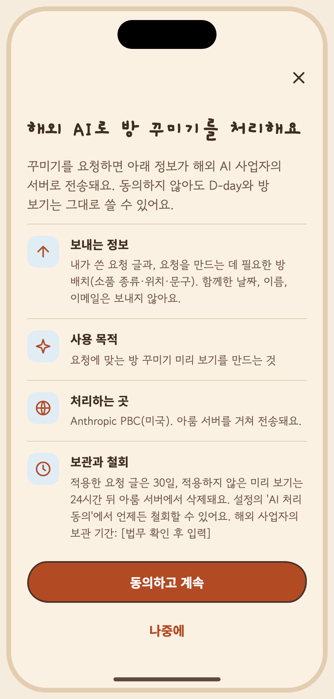

아티팩트 정본의 저장소 미러 · 버전 1794222837-1921 · 생성 파일은 수정하지 마세요. 상태 명세와 PNG는 아티팩트에 비해 오래되었을 수 있습니다. 아티팩트

# S12 해외 AI 처리 동의 승인자: 미승인 승인일: 미정 ## 목적, ID, 경로 ID: S12 Route: /prompt/consent ## 디자인 원본 - [S12-ai-consent.dc.html](../../../canvas/project/S12-ai-consent.dc.html) ## 이미지 - [S12-first__ios-light-ko.png](../../../exports/S12-first__ios-light-ko.png) ## 상태와 상호작용 - **캔버스 보드**: `S12-ai-consent` - **목적**: 전송 정보, 목적, 처리 사업자·국가, 보관·철회, 두 사람이 함께 쓰는 방이라 동의는 사람마다 따로라는 설명. 동의 / 나중에 / 철회 / 철회됨. - **이동**: 꾸미기 첫 요청 직전(전체 화면 모달). 설정 > AI 처리 동의(푸시)에서 상태 확인·철회. - 해외 사업자의 보관 기간은 법무 확인 전이라 `[법무 확인 후 입력]` 자리표시를 그대로 뒀어요. - 나중에 → 방 보기와 D-day는 그대로, 꾸미기만 잠겨요. - 동의 버튼은 항상 화면 아래에 고정이고 본문만 스크롤돼요. - **긴 문구·언어 사례**: 본문이 영어·일본어에서 길어져 스크롤 길이가 늘어요. 버튼은 화면에 고정. | 상태 ID | 설명 | 사용하는 키 | 그린 조합 | |---|---|---|---| | `S12-first` | 요청 직전 첫 동의 (상단) | `consent.title` `consent.lead` `consent.sent.label` `consent.sent.body` `consent.purpose.label` `consent.purpose.body` `consent.processor.label` `consent.processor.body` `consent.keep.label` `consent.keep.body` `consent.provider.keep` `consent.couple.label` `consent.couple.body` `consent.agree` `consent.later` | iOS·밝게·ko, Android·어둡게·ko, iOS·밝게·en, Android·어둡게·ja 외 4 | | `S12-end` | 스크롤 끝 · 동의 버튼은 항상 보임 | `consent.title` `consent.lead` `consent.sent.label` `consent.sent.body` `consent.purpose.label` `consent.purpose.body` `consent.processor.label` `consent.processor.body` `consent.keep.label` `consent.keep.body` `consent.provider.keep` `consent.couple.label` `consent.couple.body` `consent.agree` `consent.later` | iOS·밝게·ko, Android·어둡게·ko, iOS·밝게·ko·200% | | `S12-later` | 나중에 → 방 보기는 유지 (꾸미기만 잠김) | `a11y.pose.wave_main` `a11y.mascot` `a11y.pose.walk` `a11y.pose.cheer` `a11y.pose.lookup` `a11y.pose.lie` `a11y.pose.sleep` `date.since` `a11y.dday` `dday.eyebrow` `dday.count` `room.ctl.decorate` `a11y.tabbar` `tab.home` `a11y.tab` `tab.room` `a11y.tab.sel` `tab.settings` `consent.later.note` | iOS·낮·밝게·ko, Android·밤·어둡게·ko | | `S12-status-on` | 설정 · 동의 상태 (동의함) | `set.ai.consent` `consent.status.date` `consent.status.on` `consent.couple.body` `consent.sent.body` `consent.keep.body` `consent.withdraw` | iOS·밝게·ko, Android·어둡게·ko | | `S12-withdraw` | 철회 확인 | `consent.withdraw.title` `consent.withdraw.body` `consent.withdraw` `common.cancel` `set.ai.consent` `consent.status.date` `consent.status.on` `consent.couple.body` `consent.sent.body` `consent.keep.body` | iOS·밝게·ko, Android·어둡게·ko, iOS·밝게·en, Android·어둡게·ja | | `S12-withdrawn` | 철회됨 (다시 동의 가능) | `set.ai.consent` `consent.status.off` `consent.couple.body` `consent.sent.body` `consent.keep.body` `consent.agree` `consent.withdraw.done` | iOS·밝게·ko, Android·어둡게·ko | ## 이동 및 뒤로 F03: S07 → S08 → S09 → 적용 후 S07; S09 → S10 → 이전 미리보기; 필요 시 S12 동의. 뒤로: 대화/시트 또는 확인을 닫고 이전 단계로. 취소 시 방은 유지. ## 접근성 상태 표에 나열된 `a11y.*` 키를 스크린 리더 이름으로 사용합니다. 공통 접근성 및 200% 글자 규칙은 [interaction notes](../../../interaction-notes.md#10-접근성-상호작용)를 참조하세요. TODO: 해당 상태에 명시되지 않은 역할과 이름을 확인하세요. ## 수락 시나리오 - [ ] S12-AC-01: 동의하지 않으면 AI 처리를 시작하지 않는다. ## 열린 질문 / 추적 TODO: 명세에 없는 disabled/offline 상태의 적용 여부와 정확한 뒤로 대상을 확인하세요. 시나리오와 요구사항·테스트·실행 결과는 [추적표](../../traceability.md)에 연결하세요.
| Key | 한국어 | English · draft G4 | 日本語 · draft G4 |
|---|---|---|---|
| a11y.dday | 함께한 지 {n}일째, 2025년 6월 29일부터 | Day {n} together, since June 29, 2025 | 一緒に過ごして{n}日目、2025年6月29日から |
| a11y.mascot | 아루미, {pose} | Aroomi, {pose} | アルーミ、{pose} |
| a11y.pose.cheer | 신나 있어요 | cheering | はしゃいでいます |
| a11y.pose.lie | 쉬고 있어요 | resting | 休んでいます |
| a11y.pose.lookup | 올려다보고 있어요 | looking up | 見上げています |
| a11y.pose.sleep | 자고 있어요 | sleeping | 眠っています |
| a11y.pose.walk | 걷고 있어요 | walking | 歩いています |
| a11y.pose.wave_main | 인사하고 있어요 | waving | 手を振っています |
| a11y.tab | {name} 탭, {total}개 중 {n}번째{sel} | {name} tab, {n} of {total}{sel} | {name}タブ、{total}件中{n}件目{sel} |
| a11y.tab.sel | , 선택됨 | , selected | 、選択中 |
| a11y.tabbar | 탭 막대 | Tab bar | タブバー |
| common.cancel | 취소 | Cancel | キャンセル |
| consent.agree | 동의하고 계속 | Agree and continue | 同意して続ける |
| consent.couple.body | 동의는 사람마다 따로 해요. 내 동의는 내가 보내는 요청에만 적용돼요. 요청에는 두 사람이 함께 꾸민 방 배치가 들어가요. | Consent is given per person. Yours applies only to requests you send. Requests include the room layout you two decorated together. | 同意は一人ひとり別々です。あなたの同意は、あなたが送るリクエストにのみ適用されます。リクエストには、ふたりで飾った部屋の配置が含まれます。 |
| consent.couple.label | 두 사람이 함께 쓰는 방이에요 | This room is shared by two | ふたりで使う部屋です |
| consent.keep.body | 적용한 요청 글은 30일, 적용하지 않은 미리 보기는 24시간 뒤 아룸 서버에서 삭제돼요. 설정의 'AI 처리 동의'에서 언제든 철회할 수 있어요. | Applied requests are deleted from Aroom's servers after 30 days, and unapplied previews after 24 hours. You can withdraw any time in Settings under "AI processing consent". | 反映したリクエスト文は30日後、反映しなかったプレビューは24時間後に、アルームのサーバーから削除されます。設定の「AI処理への同意」からいつでも撤回できます。 |
| consent.keep.label | 보관과 철회 | Retention and withdrawal | 保管と撤回 |
| consent.later | 나중에 | Not now | あとで |
| consent.later.note | 동의하기 전까지는 꾸미기를 쓸 수 없어요. 방 보기와 D-day는 그대로예요. | You can't decorate until you agree. Viewing the room and the day count are unaffected. | 同意するまで飾り付けは使えません。部屋の閲覧と日数表示はそのまま使えます。 |
| consent.lead | 꾸미기를 요청하면 아래 정보가 해외 AI 사업자의 서버로 전송돼요. 동의하지 않아도 D-day와 방 보기는 그대로 쓸 수 있어요. | When you ask to decorate, the information below is sent to an AI provider's servers overseas. Without consent, the day count and viewing the room still work. | 飾り付けをリクエストすると、以下の情報が海外のAI事業者のサーバーに送信されます。同意しなくても、日数表示や部屋の閲覧は使えます。 |
| consent.processor.body | Anthropic PBC(미국). 아룸 서버를 거쳐 전송돼요. | Anthropic PBC (United States). Sent through Aroom's servers. | Anthropic PBC（米国）。アルームのサーバーを経由して送信されます。 |
| consent.processor.label | 처리하는 곳 | Processed by | 処理する事業者 |
| consent.provider.keep | 해외 사업자의 보관 기간: [법무 확인 후 입력] | Provider retention period: [fill in after legal review] | 海外事業者の保管期間：[法務確認後に記入] |
| consent.purpose.body | 요청에 맞는 방 꾸미기 미리 보기를 만드는 것 | To create a room preview that matches your request | リクエストに合った部屋のプレビューを作ること |
| consent.purpose.label | 사용 목적 | Purpose | 利用目的 |
| consent.sent.body | 내가 쓴 요청 글과, 요청을 만드는 데 필요한 방 배치(소품 종류·위치·문구). 함께한 날짜, 이름, 이메일은 보내지 않아요. | The request you typed, and the room layout needed to build it (item types, positions, text). Your together-date, names and email are not sent. | 入力したリクエスト文と、作成に必要な部屋の配置（小物の種類・位置・文言）。一緒になった日、名前、メールアドレスは送信しません。 |
| consent.sent.label | 보내는 정보 | What's sent | 送信する情報 |
| consent.status.date | 2026년 10월 24일 | Oct 24, 2026 | 2026年10月24日 |
| consent.status.off | 동의하지 않음 | Not agreed | 未同意 |
| consent.status.on | 동의함 · {date} | Agreed · {date} | 同意済み · {date} |
| consent.title | 해외 AI로 방 꾸미기를 처리해요 | Room decorating is processed by AI overseas | 部屋の飾り付けは海外のAIで処理されます |
| consent.withdraw | 동의 철회 | Withdraw consent | 同意を撤回 |
| consent.withdraw.body | 철회하면 요청이 더 이상 해외로 전송되지 않아요. 지금 방은 그대로 남고, 다시 꾸미려면 다시 동의해야 해요. | After you withdraw, requests are no longer sent overseas. The room stays as it is, and you'll need to agree again to decorate. | 撤回すると、リクエストは海外に送信されなくなります。今の部屋はそのまま残り、また飾るには再度の同意が必要です。 |
| consent.withdraw.done | 동의를 철회했어요 | Consent withdrawn | 同意を撤回しました |
| consent.withdraw.title | 동의를 철회할까요? | Withdraw your consent? | 同意を撤回しますか？ |
| date.since | 2025년 6월 29일부터 | since June 29, 2025 | 2025年6月29日から |
| dday.count | {n}일째 | Day {n} | {n}日目 |
| dday.eyebrow | 함께한 지 | Together | 一緒に過ごして |
| room.ctl.decorate | 꾸미기 | Decorate | 飾る |
| set.ai.consent | AI 처리 동의 | AI processing consent | AI処理への同意 |
| tab.home | 홈 | Home | ホーム |
| tab.room | 방 | Room | 部屋 |
| tab.settings | 설정 | Settings | 設定 |